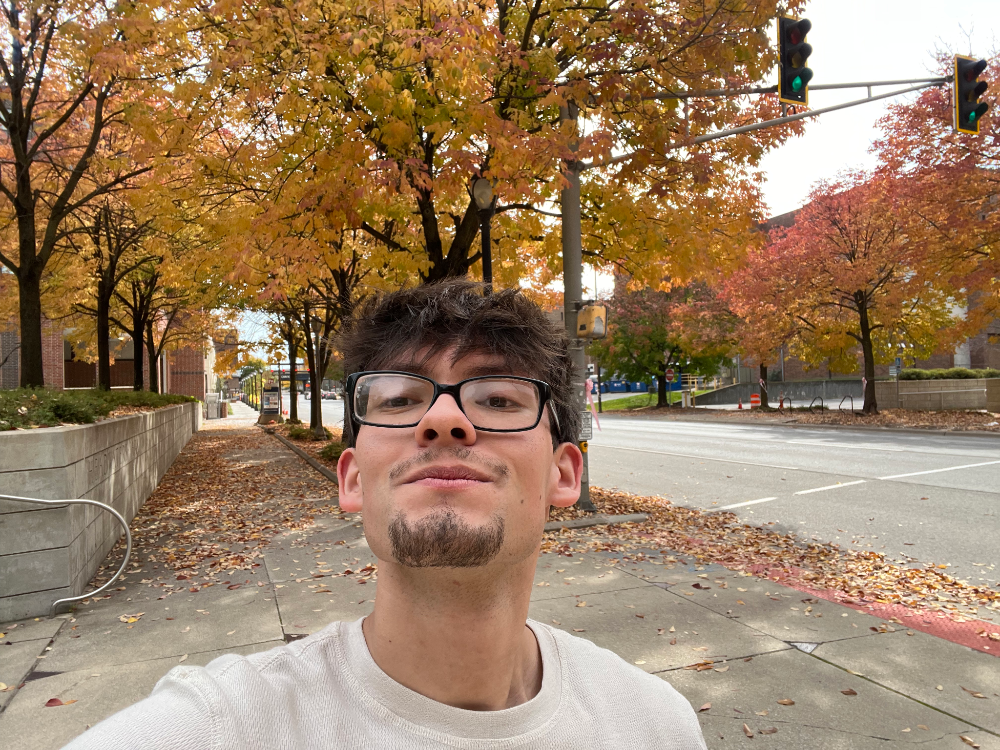

Title: Digital Media and Storytelling Student
Tagline: Dependable service, clear communication, and a strong work ethic
Contact: Email: itsanthonyalejo@gmail.com
About Me: I am a motivated, dependable Digital Media and Storytelling student with experience in customer service and community ministry. I bring professionalism, good judgment, and a strong work ethic to my work. I am seeking an entry-level opportunity to develop new skills, take on responsibilities, and contribute as a reliable team member.
Program: Digital Media and Storytelling
Attendance: 2024–present
Expected graduation: Spring 2028
On track to graduate with Academic Honors. Writing has been selected for use in future classes and featured in the Celebration of Student Writing 2025 student pressbook.
Written and verbal communication; problem-solving and critical thinking; reliability and punctuality; attention to detail
Python and computers